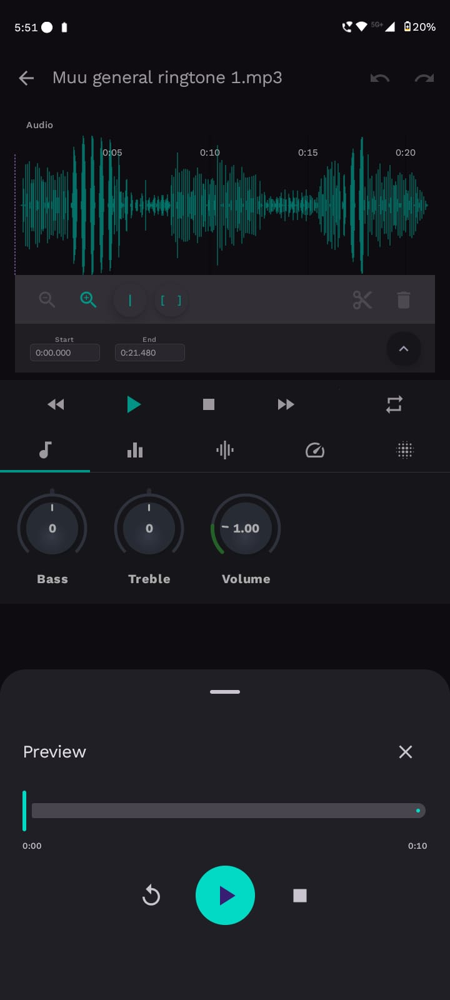
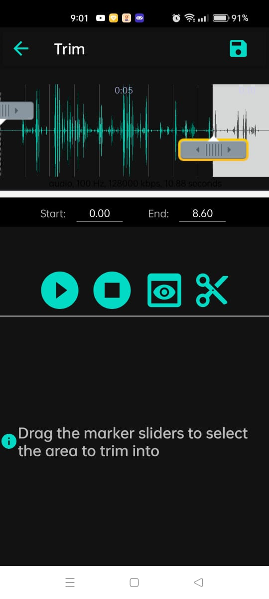
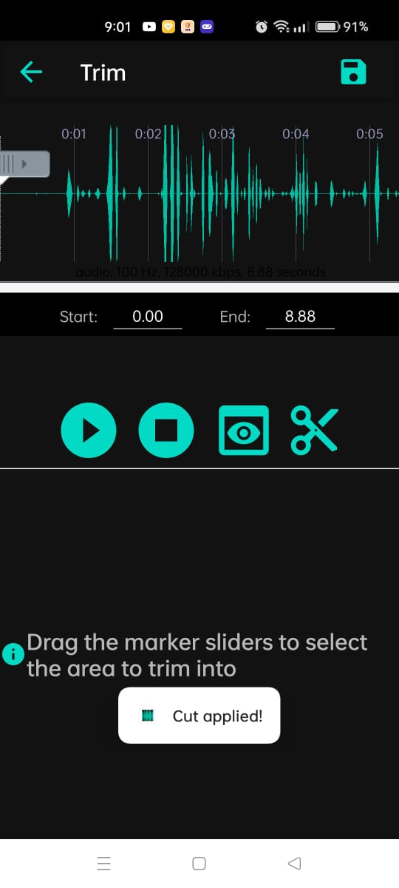

👁️ Feature Preview
Each feature in the app includes a preview option to help users understand what it does before using it fully.
🔍 How It Works
- An eye-shaped icon ! appears next to each feature.
- Clicking the icon triggers a 10-second preview by default.
- This preview provides a quick demo of the feature without applying any permanent changes.
- While the preview is playing, you can pause or stop it anytime using the on-screen controls.

⏸️ Pause & Stop Options
- Once a preview begins, pause and stop buttons will appear.
- You can:
- Tap Pause ⏸️ to temporarily halt the preview.
- Tap Stop ⏹️ to immediately cancel the preview playback.
- After stopping or letting the preview complete, the feature returns to its idle state.
⚙️ Customizing Preview Duration
- You can change the preview duration from the Settings page.
- Supported range: 5 to 30 seconds.
- To adjust the duration:
- Go to Settings.
- Locate the "Preview Duration" option.
- Use the slider or input box to choose your preferred time.
- The new setting is saved automatically and applies to all future previews.
✂️ Cut Feature
Each feature in the app also includes a cut option that allows users to trim and remove unwanted portions easily.
🔧 How It Works
- A scissor-shaped icon ! is available next to every feature that supports cutting.
- You can move the sliders to select the start and end points of the portion you want to remove.
- Once the unwanted range is selected, just tap the scissor icon to perform the cut.
- The selected segment will be discarded immediately, keeping only the desired parts.


🎯 Steps to Cut a Segment
- Click on the ✂️ scissor icon next to the feature.
- Use the start and end sliders to mark the range to be removed.
- Review the selected section.
- Click the Cut button/icon to confirm.
- The unwanted portion is deleted from the content, and the remaining part is retained.
🧪 Example Flow
| Feature | Action | Result |
|---|---|---|
| 🎵 Advanced Edit | Select 00:10 to 00:25 | Removes that segment from the track |
| 🎤 Record | Trim 00:00 to 00:04 | Discards leading silence |
ℹ️ Note: Once cut, the removed part cannot be recovered, unless you undo (if supported).
💾 Save Feature
All features in the app come with a save option that allows users to apply adjustments, rename files, and store the final output.
📌 How It Works
- A save icon ! is shown at the top-right corner of each feature.
- Clicking this icon:
- Applies all adjustments made (via knobs, sliders, etc.).
- Prompts the user to rename the file and select the desired output format (e.g.,
.mp3,.wav). - Once the details are filled, tap the Save button at the bottom to complete the process.
🗂️ File Storage
- Saved audio files (music tracks or voice recordings) are stored inside the
Auditionfolder. - Each save creates a new version with the updated settings and user-defined name.
🎛️ Split Segment Saving
- If your content is split into multiple segments (e.g., via the Cut feature), each segment is saved as a separate file.
- The saved files follow a structured naming pattern like:
Track_Segment_1.mp3Track_Segment_2.mp3-
...
-
After saving, the first segment plays automatically.
- Tap the Next button to play the next saved segment in order.